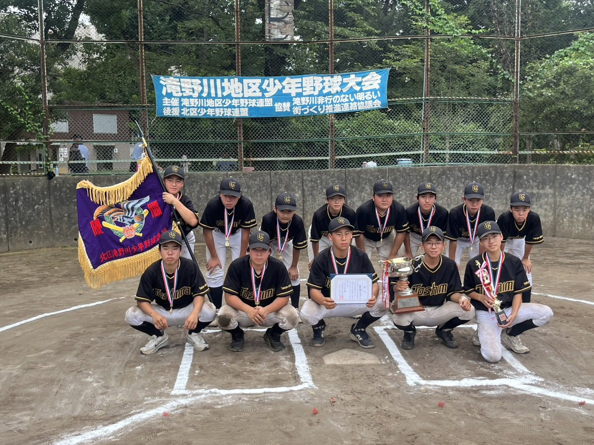
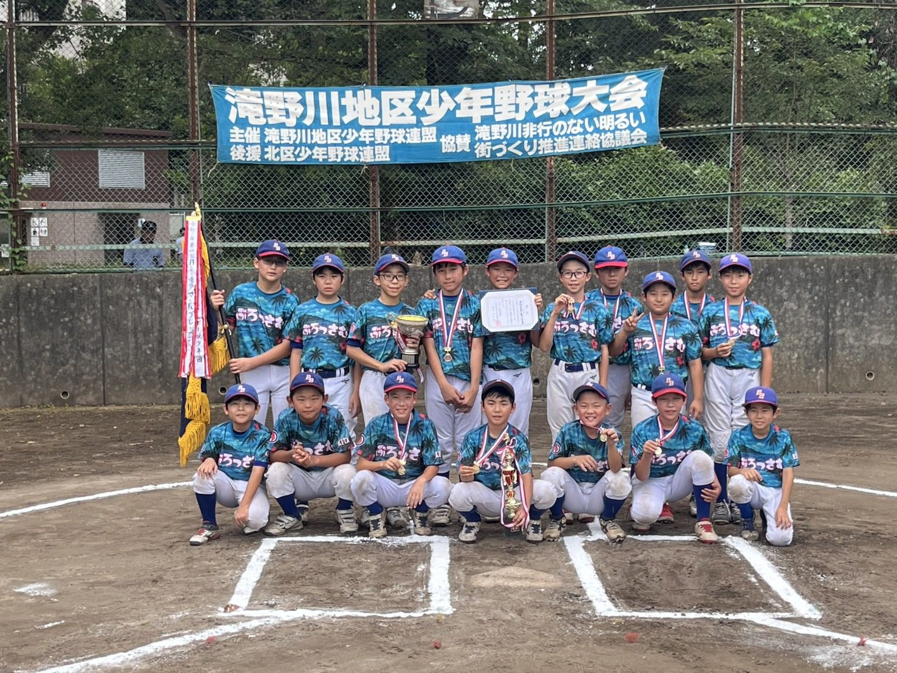
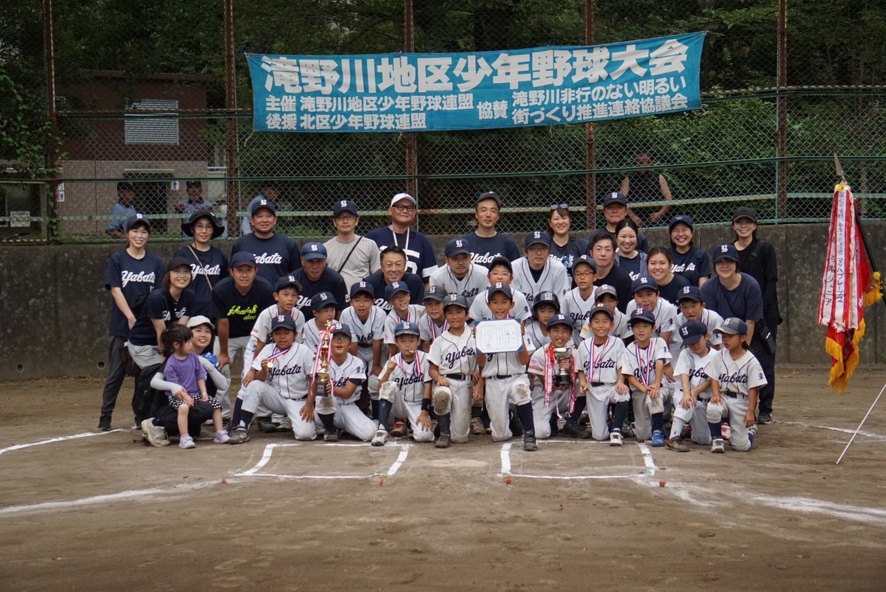

※第45回 北区滝野川春季大会の結果を公開しました。
45
第45回 北区滝野川春季大会
大会結果
Ａクラス

拡大
第45回春季大会 Ａクラス
Ｂクラス
- 🥇 優勝：ブロッサムベースボールクラブ
- 🥈 準優勝：城北メッツ
- 🥉 3位：蓮根ロータス ／ 飛鳥ジュニア

拡大
第45回春季大会 Ｂクラス
Ｃクラス
- 🥇 優勝：谷端ジュニア
- 🥈 準優勝：城北メッツ
- 🥉 3位：西浮間イーグルス ／ ブロッサムベースボールクラブ

拡大
第45回春季大会 Ｃクラス
試合日程（第45回北区滝野川春季大会）
7月11日（土） 試合日程
【中央公園A面】
＜Cクラス＞
- 13：00ブロッサムベースボールクラブ VS 谷端ジュニア
- 14：25西浮間イーグルス VS 城北メッツ
＜Aクラス＞
【中央公園B面】
＜Bクラス＞
- 12：30城北メッツ VS 蓮根ロータス
- 14：15ブロッサムベースボールクラブ VS 飛鳥ジュニア
7月12日（日） 試合日程
【中央公園B面】
＜Bクラス決勝＞
- 10：00（城北メッツ VS 蓮根ロータスの勝者） VS （ブロッサムベースボールクラブVS飛鳥ジュニアの勝者）
＜Aクラス決勝＞
- 12：00豊島クラブ２ VS （神谷ライオンズVS豊島クラブ１の勝者）
＜Cクラス決勝＞
- 14：00（西浮間イーグルスVS城北メッツ勝者） VS （ブロッサムベースボールクラブVS谷端ジュニアの勝者）
試合日程（第45回北区滝野川春季大会）
7月4日・5日試合日程のお知らせをいたします。
7月4日（土） 試合日程
【中央公園A面】
＜Aクラス＞
- 14：00豊島クラブ１ VS ブロッサムベースボールクラブ
- 14：30神谷ライオンズ VS 西浮間イーグルス
- 16：15フォルトゥーナスターズ VS 豊島クラブ２
【中央公園B面】
＜Bクラス＞
- 14：00十条イーグルス VS 飛鳥ジュニア
- 14：30谷端ジュニア VS 稲田クラブ
- 16：15豊島堀船 VS 城北メッツ
7月5日（日） 試合日程
【中央公園B面】
＜Bクラス＞
- 9：00蓮根ロータス VS マッハブレーブス１
- 10：45（十条イーグルスVS飛鳥ジュニアの勝者） VS マッハブレーブス２
- 14：00（豊島堀船VS城北メッツの勝者） VS （谷端ジュニアVS稲田クラブの勝者）
- 15：45ブロッサムベースボールクラブ VS 新田ファイヤーズ
【豊島5丁目グリーンスポーツプラザ】
＜Cクラス＞
- 9：30ブロッサムベースボールクラブ VS 蓮根ロータス
- 10：55谷端ジュニア VS 十条イーグルス
- 13：30西浮間イーグルス VS マッハブレーブス
- 15：00新田ファイヤーズ VS 城北メッツ
試合日程（第45回北区滝野川春季大会）
6月20日（土）・21日（日）の試合日程をお知らせいたします。
6月20日（土） 試合日程
【中央公園A面】
＜Aクラス＞
- 14:00～豊島クラブ１ vs ブロッサムベースボールクラブ２
- 15:45〜神谷ライオンズ vs 西浮間イーグルス
【中央公園B面】
＜Bクラス＞
- 14:00〜十条イーグルス vs 飛鳥ジュニア
15:45〜 豊島堀船 vs 城北メッツ →27日に延期
6月21日（日） 試合日程
【中央公園A面】
＜Bクラス＞
＜Aクラス＞
- 10:45〜（豊島クラブ１ vs ブロッサムベースボールクラブ２の勝者） vs （神谷ライオンズ vs 西浮間イーグルスの勝者）
＜Bクラス＞
- 12:30〜ブロッサムベースボールクラブ vs 新田ファイヤーズ
【中央公園A面】
＜Bクラス＞
- 9:00〜（十条イーグルス vs 飛鳥ジュニアの勝者） vs マッハブレーブス２
＜Cクラス＞
- 10:45〜西浮間イーグルス vs マッハブレーブス
- 12:10〜ブロッサムベースボールクラブ vs 蓮根ロータス
- 13:35〜谷端ジュニア vs 十条イーグルス
41
第41回 北区滝野川少年野球大会 新人戦
大会結果
Ａクラス
Ｂクラス
- 🥇 優勝：谷端ジュニア
- 🥈 準優勝：ブロッサムＢＣ
- 🥉 3位：新田ファイヤーズ ／ 城北メッツ
Ｃクラス
- 🥇 優勝：城北メッツ
- 🥈 準優勝：十条イーグルス
- 🥉 3位：西浮間イーグルス ／ ブロッサムＢＣ
お知らせ・ご案内
打ち上げのご案内
- 日時： 1月17日（土） 午後6時～
- 場所： ビアンタ板橋店（北区滝野川7-5-6 / JR埼京線板橋駅徒歩5分 📞 03-5394-0451）
- 会費： 4,000円（最低各チーム 各クラス1名）
- 多くの方の参加をお待ちしております。
Ｃクラス塁審のお願い
滝野川少年野球大会では、Ｃクラスの1塁審、3塁審を試合当該チームにお願いしています。
審判をされる方は必ず審判服の着用をお願いします。ご理解、ご協力をお願い致します。
特別賞
- ベスト行進賞： 開会式の選手行進が良かったチームに進呈します。
- ホームラン賞： Ｃクラスにホームラン賞を出します。
試合日程（新人戦）
１２月２０日（土） 試合日程
１２月１４日（日） 試合日程（雨天順延）
１２月７日（日） 試合日程
Ａクラス（決勝）（中央公園Ｂ面）
Ｂクラス（中央公園Ｂ面）
- 8:00～（準決勝・継続試合） ブロッサムＢＣ vs 城北メッツ
- 13:00～（決勝） 谷端ジュニア vs （BBCと城北の勝者）
Ｃクラス（準決勝）（中央公園Ｂ面）
１２月６日（土） 試合日程
Ａクラス（中央公園Ａ面）
Ｂクラス
- 15:10～（準決勝・中央公園Ａ面） ブロッサムＢＣ vs 城北メッツ
- 14:30～（準決勝・中央公園Ｂ面） 谷端ジュニア vs 新田ファイヤーズ
１１月３０日（日） 試合日程
Ｂクラス（豊島５丁目ＧＳ）
- 9:00～十条イーグルス vs ブロッサムＢＣ
- 14:10～新田ファイヤーズ vs 諏訪クラブ
Ｃクラス（豊島５丁目ＧＳ）
- 11:00～（準決勝） ブロッサムＢＣ vs （十条と新田の勝者）
- 12:45～谷端ジュニア vs 城北メッツ
１１月２９日（土） 試合日程
Ａクラス（中央公園Ａ面）
Ｃクラス（中央公園Ｂ面）
- 14:30～十条イーグルス vs 新田ファイヤーズ
１１月２４日（月祝） 試合日程
Ａクラス（中央公園Ａ面）
- 9:00～豊島クラブⅠ vs フォルトゥーナスターズ
- 12:10～西浮間イーグルス vs 豊島クラブⅢ
- 13:55～神谷ライオンズ vs ブロッサムＢＣ
Ｂクラス（時間変更）（中央公園Ｂ面）
- 9:00～谷端ジュニア vs （マッハブレーブスと豊島・堀船の勝者）
- 10:45～飛鳥ジュニア vs ブロッサムＢＣ
- 12:30～（王子ドルフィンズと城北メッツの勝者） vs 赤西ナイン
Ｃクラス（中央公園Ａ面）
１１月２３日（日） 試合日程
Ｂクラス（豊島５丁目ＧＳ）
- 12:50～王子ドルフィンズ vs 城北メッツ
- 14:30～マッハブレーブス vs 豊島・堀船
Ｃクラス（豊島５丁目ＧＳ）
- 7:10～西浮間イーグルス vs ブルースカイズ
- 8:30～王子ドルフィンズ vs ブロッサムＢＣ
- 9:50～マッハブレーブス vs 十条イーグルス
１１月２２日（土）
大会概要・運営情報（新人戦）
開会式
- 日時： 令和７年１１月２２日（土） 13:30 中央公園Ａ面集合（14:00～ 開会式）
- プラカードを忘れずにお願いします。
大会日程
- 期間： 令和７年 11月22・23・24・29・30日、12月6・7・13・14・20・21日
- 会場： 中央公園野球場・豊島5丁目グリーンスポーツ広場
抽選会
- 日時： 令和７年１１月８日（土） 受付18:15～ / 抽選18:30～
- 場所： 中央公園文化センター 2F 学習室Ａ
- 大会参加費、選手登録書、学校行事予定の提出をお願いいたします。
44
第44回 北区滝野川少年野球 春季大会
大会結果
Ａクラス
- 🥇 優勝：神谷ライオンズ
- 🥈 準優勝：豊島クラブ２
Ｂクラス
- 🥇 優勝：マッハブレーブス
- 🥈 準優勝：諏訪クラブ
- 🥉 3位：赤西ナイン ／ 谷端ジュニア
Ｃクラス
- 🥇 優勝：ブルースカイズ
- 🥈 準優勝：ブロッサムＢＣ
- 🥉 3位：城北メッツ ／ 新田ファイヤーズ
試合日程（春季大会）
５月１１日（日） 試合日程
Ｂクラス（決勝）（中央公園Ｂ面）
打ち上げ
- 日時： 5月11日（日） 午後6時～
- 場所： ビアンタ板橋店（📞 03-5394-0451 / 会費：4,000円）
５月５日（月） 試合日程
Ｂクラス（準決勝）（中央公園Ａ面）
- 9:00～諏訪クラブ vs 谷端ジュニア
- 11:00～マッハブレーブス vs 赤西ナイン
５月４日（日） 試合日程
４月２９日（火） 試合日程
Ａクラス（決勝）（中央公園Ａ面）
Ｂクラス（中央公園Ａ面）
- 11:30～赤西ナイン vs 稲田クラブ
- 14:00～豊島・堀船 vs マッハブレーブス
Ｃクラス（準決勝）（中央公園Ｂ面）
- 9:00～ブロッサムＢＣ vs 新田ファイヤーズ
- 10:40～ブルースカイズ vs 城北メッツ
４月２７日（日） 試合日程
Ａクラス（中央公園Ｂ面）
Ｂクラス（中央公園Ｂ面）
- 9:00～谷端ジュニア vs 城北メッツ
- 12:30～諏訪クラブ vs 新田ファイヤーズ
- 14:30～赤西ナイン vs 東神ユニバース
Ｃクラス（豊島５丁目GS）
- 10:00～豊島・堀船 vs ブルースカイズ
- 11:25～西浮間イーグルス vs 城北メッツ
- 12:50～ブロッサムＢＣ vs 王子ドルフィンズ
- 14:15～飛鳥ジュニア vs 新田ファイヤーズ
４月２６日（土） 試合日程
Ａクラス（中央公園Ａ面）
- 13:30～神谷ライオンズ１ vs 豊島クラブ１
- 15:15～ブロッサムＢＣ vs 豊島クラブ２（雨天再試合）
Ｂクラス（中央公園Ｂ面）
- 13:30～新田ファイヤーズ vs ブロッサムＢＣ
- 15:15～赤西ナイン vs 東神ユニバース（雨天再試合）
４月２０日（日） 試合日程
Ａクラス（中央公園Ｂ面）
- 9:00～神谷ライオンズ２ vs 豊島クラブ２
- 15:45～西浮間イーグルス vs 神谷ライオンズ１
Ｂクラス（中央公園Ｂ面）
Ｃクラス（中央公園Ａ面）
- 9:00～城北メッツ vs 稲田クラブ
- 10:25～西浮間イーグルス vs 谷端ジュニア１
- 11:50～マッハブレーブス vs ブルースカイズ
- 13:15～谷端ジュニア２ vs 飛鳥ジュニア
- 14:40～十条イーグルス vs 王子ドルフィンズ
４月１９日（土） 試合日程
Ｂクラス
- 15:30～（中央公園Ａ面） 城北メッツ vs 王子ドルフィンズ
- 15:30～（中央公園Ｂ面） ブルースカイズ vs マッハブレーブス
大会概要・運営情報（春季大会）
開会式
- 日時： 令和７年４月１９日（土） 14:00 中央公園Ａ面集合（14:30～ 開会式）
- プラカードを忘れずにお願いします。
大会日程
- 期間： 令和７年 4月19・20・26・27・29日、5月3・4・5・6・10・11日
- 会場： 中央公園野球場・荒川グランド・豊島5丁目グリーンスポーツ広場
抽選会
- 日時： 令和７年４月１３日（日） 受付18:15～ / 抽選18:30～
- 場所： 中央公園文化センター 2F 学習室Ａ